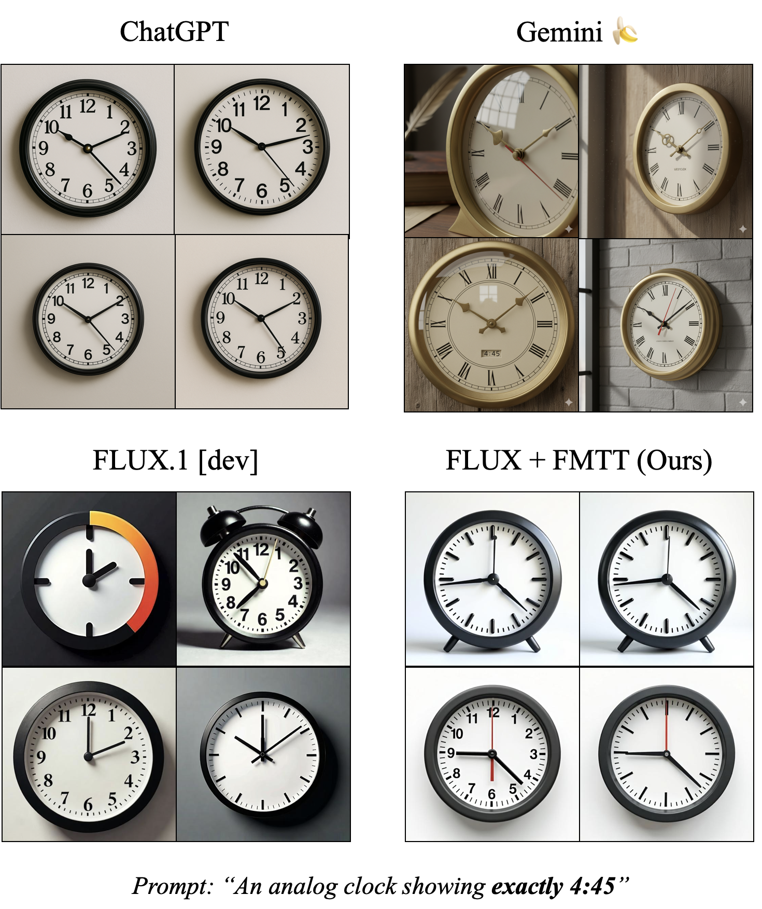
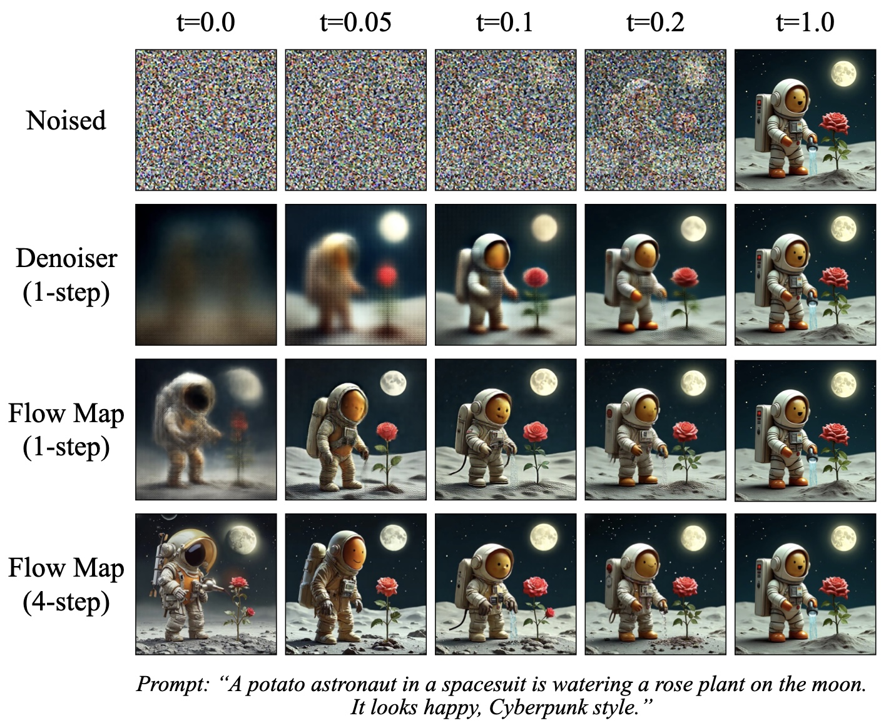
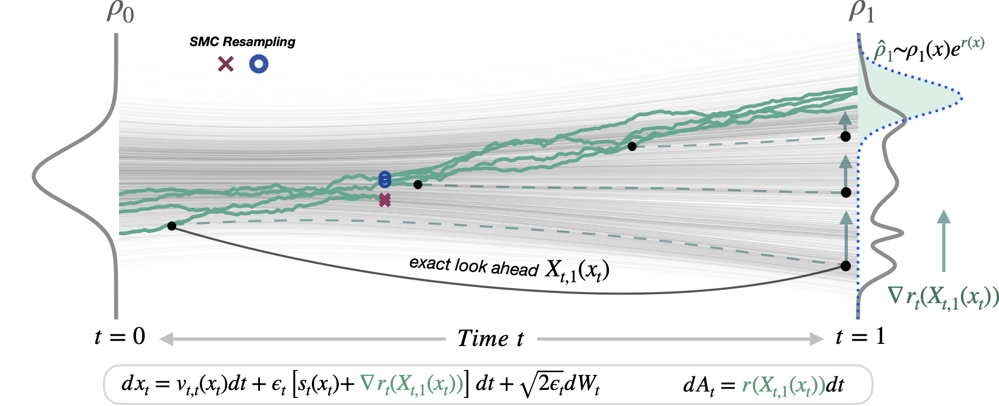
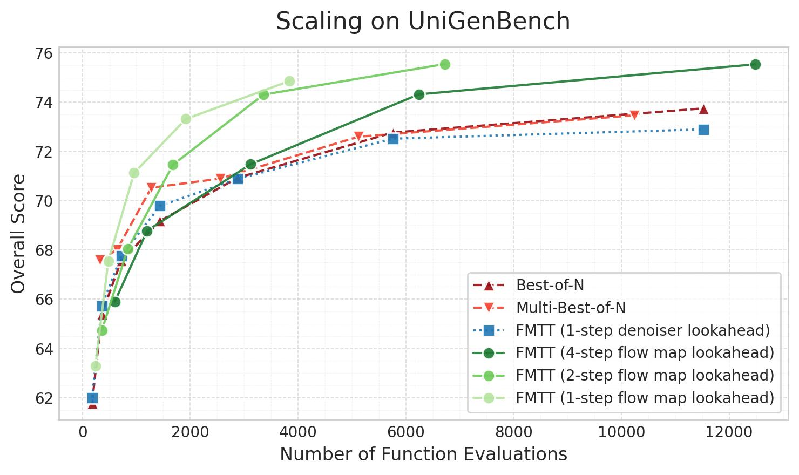
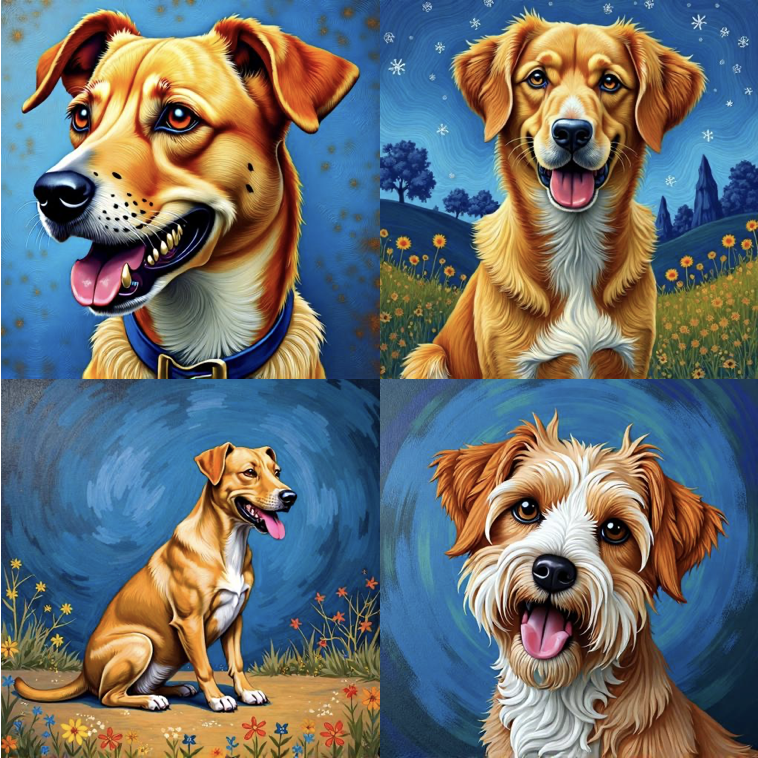
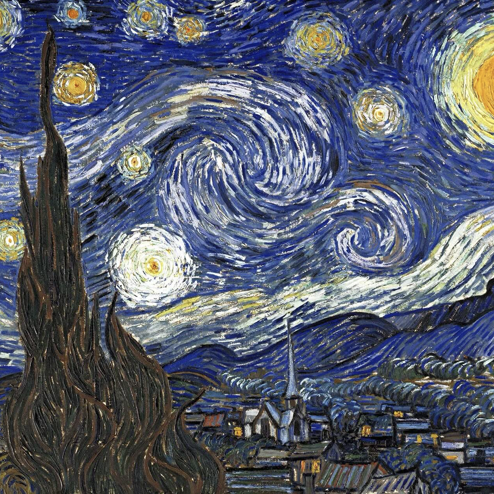
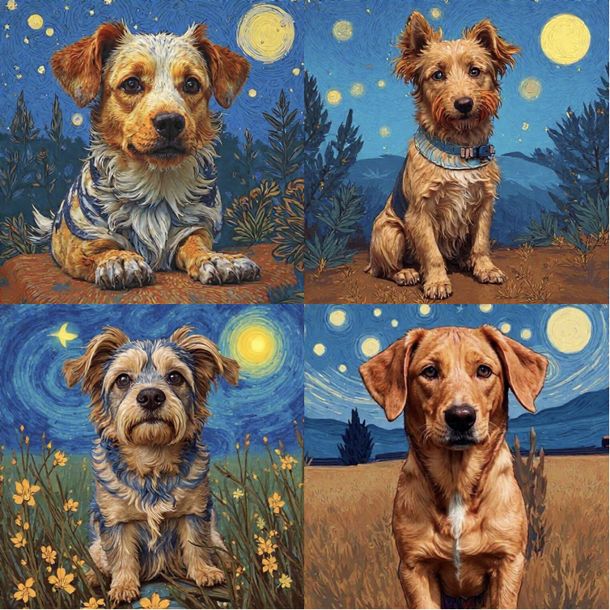
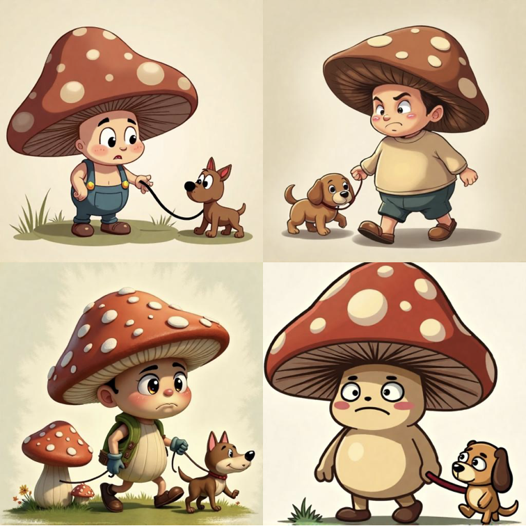
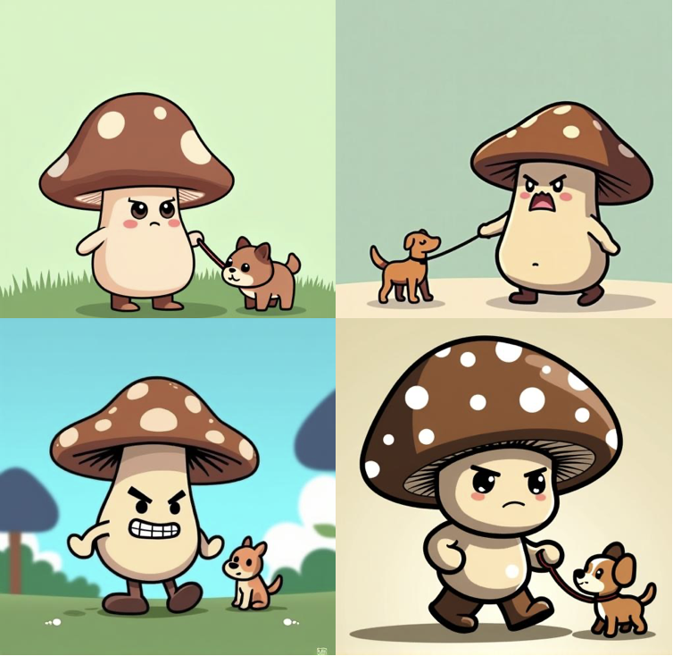

Test-time scaling of diffusions aims to generate samples that achieve high scores under a user-defined reward. Most existing methods do this by injecting the reward's gradient directly into the diffusion process, but this is ill-posed, since the reward is only well-defined on the clean data distribution at the end of generation. Prior approaches attempt to fix this by using a 1-step denoiser to estimate the final sample, but this is extremely inaccurate early in sampling, leading to unhelpful gradients. We introduce Flow Map Trajectory Tilting (FMTT), a simple alternative that instead uses the diffusion's flow map, which facilitates fast single- or few-step generation, as a look-ahead that is both efficient and accurate. This allows reward signals to be applied consistently throughout the entire generation process. FMTT can be used for both exact sampling via importance weighting and principled search that focuses on high-reward samples.

Diffusions and flow-based models have become the backbone of modern generative modeling, producing remarkably realistic images and videos, and proved to be highly successful tools across computer vision and scientific domains. Sampling from these models can be seen as numerically solving an ordinary or stochastic differential equation (ODE/SDE), the coefficients of which are learned neural networks. Specifically, these methods learn neural networks to estimate a velocity field $b_t(x_t)$ and score function $s_t(x_t)$, and solve the following SDE from $t=0$ (pure noise) to $t=1$ (pure data) to produce new samples: $$ d x_t = [b_t(x_t) + \epsilon_t s_t(x_t)] dt + \sqrt{2\epsilon_t} d W_t, \quad x_0 \sim \mathcal{N}(0, I), $$ where setting $\epsilon_t = 0$ corresponds to the deterministic case, often called the probability flow ODE (PF-ODE).
In practice, to enable controllable generation, it is often the case that we want to generate samples from the model's distribution $p(x)$ that have high scores under some user-defined reward function $r(x)$. Concretely, the goal is to generate samples from a distribution $q(x)$ that maximizes the following objective: $$ \arg\max_{q} \left[\mathbb{E}_{q}[r(x)] - \lambda \times \mathrm{KL}(q \,\|\, p)\right], $$ where $\lambda$ is a hyperparameter that controls the trade-off between the reward and deviating from the base distribution. This problem has a closed-form solution: $q(x) \propto p(x) \exp(r(x) / \lambda)$, which is referred to as the reward-tilted distribution. An active area of current research is how to best adapt the dynamical equations (SDE/ODE) at inference time to generate samples from this tilted distribution.
Efforts to align diffusion models for high-reward generation can be broadly divided into training-based and training-free approaches. Training-based methods, often referred to as diffusion alignment techniques, optimize the model parameters so that the retrained model naturally produces higher-reward samples. While effective, these approaches are computationally expensive and must be repeated for each new reward function. Training-free methods, also known as test-time scaling methods, on the other hand, modify the sampling process to bias generation toward high-reward regions, making them far more flexible when working with multiple or rapidly changing rewards. In this work, we focus on training-free methods.
A common approach is to apply reward guidance, which injects the gradient of the reward directly into the stochastic generative process to nudge samples toward high-reward regions: $$ dx_t = [b_t(x_t) + \epsilon_t s_t(x_t) + \color{red}{\epsilon_t \nabla r_t(x_t)}] dt + \sqrt{2\epsilon_t} d W_t, \quad x_0 \sim \mathcal{N}(0, I). $$
In practice, however, most rewards (such as "text alignment" or "visual fidelity") are only defined on clean samples $x_1$ at the end of generation. Prior works address this by either (1) ignoring the issue and evaluating the reward directly on the noisy state (e.g., $r_t(x) = t\,r(x)$), or (2) using the denoiser $D(x_t) = \mathbb{E}[x_1 | x_t]$ to approximate the final image (e.g., $r_t(x) = t\,r(D(x_t))$). Both strategies evaluate the reward at states that are not yet fully generated, leading to unreliable gradients, especially in the early stages of sampling. For a visual example, see Figure 1.

Figure 1: Comparison between different look-ahead methods. We visualize corrupted data for different levels of noise t and show the outputs of a 1-step denoiser, 1-step flow map, and a 4-step flow map.
Flow Map Trajectory Tilting (FMTT) offers a simple and principled alternative. The main idea is to use a flow map $X_{t, s}(x_t)$, a function that integrates the probability flow ODE to map any noisy state $x_t$ to a less noisy state $x_s$. In other words, the flow map allows us to jump along the diffusion trajectory without explicitly simulating every intermediate step. This allows single-step, few-step, and full many-step sampling within the same framework. And, when we evaluate the flow map at $t=s$, its derivative recovers the instantaneous velocity $b_t(x_t)$ learned by standard flow matching. By using the flow map as a look-ahead that is both fast and accurate, and computing the reward gradient at the estimated final state (e.g. $r_t(x_t) = t\,r(X_{t, 1}(x_t))$), FMTT enables consistent reward guidance throughout the trajectory. Essentially, FMTT steers the stochastic generative process with an efficient deterministic look-ahead towards high-reward regions (see Figure 2 below). We additionally unify sampling and search under one framework, allowing both exact sampling via importance weighting and reward-tilted search that reliably finds high-reward samples. For principled sampling, we rely on Jarzynski's estimator to derive FMTT's time-dependent importance weights, which reduce to $ A_t = \int_{0}^{t} r(X_{t, 1}(x_t)) ds. $ Please refer to the paper for more details.

Figure 2: Using the flow map $X_{t, 1}(x_t)$ as a look-ahead inside the reward, reward information can be principly used through the tilted trajectories (green lines). This allows better ascent on the reward, as well as remarkably simplifying the importance weights for exact sampling.
We evaluate our FMTT algorithm on text-to-image generation using the flow map from Align Your Flow, which distills the FLUX.1 [dev] model into an efficient flow map. We consider three categories of rewards: (1) human preference rewards, (2) geometric rewards, and (3) VLM-based rewards.
Using human preference rewards, we can generate images with improved visual fidelity and text alignment. Following prior works, we use a linear combination of Pickscore, HPSv2, ImageReward, and CLIP as the reward function and quantitatively evaluate the performance on the GenEval benchmark. This commonly-used benchmark evaluates the performance of text-to-image models using approximately 550 object-centric prompts and measures the quality of the generated images using pre-trained object detectors.
A summary of the results is shown in the table below. For more details, please refer to the paper.
| Method | Mean | Single Obj. | Two Obj. | Counting | Colors | Position | Attr. Binding |
|---|---|---|---|---|---|---|---|
| FLUX.1 [dev] | 0.65 | 0.99 | 0.78 | 0.70 | 0.78 | 0.18 | 0.45 |
| FLUX.1 [dev] + Best-of-32 | 0.75 | 0.99 | 0.94 | 0.83 | 0.86 | 0.26 | 0.57 |
| FMTT (1-step denoiser look-ahead) | 0.75 | 0.99 | 0.90 | 0.87 | 0.87 | 0.26 | 0.59 |
| FMTT (4-step diffusion look-ahead) | 0.75 | 0.99 | 0.93 | 0.86 | 0.89 | 0.27 | 0.57 |
| FMTT (4-step flow map look-ahead) | 0.79 | 1.0 | 0.97 | 0.90 | 0.91 | 0.30 | 0.64 |
A second class of rewards we consider to highlight and illustrate the power of our method are challenging geometric rewards, which encourage invariance under simple geometric transformations such as masking, symmetry, or rotation. These objectives make generation more controllable, enabling fine-grained layout adjustments and structured scene composition.
By guiding the model toward outputs that achieve high geometric rewards, we can position, align, and balance elements in the image more precisely. Below, we show some examples. Note how FLUX.1 [dev] cannot satisfy the desired constraints by simply prompting, and our reward-guidance is necessary to satisfy the geometry conditions.
Finally, we also explore using pretrained vision-language models (VLMs) to judge our images. Specifically, we provide the generated image and a natural-language yes/no question to the VLM, and use the model's confidence in answering "Yes" as the reward. This makes it possible to express complex objectives entirely through language. For example, asking "Is <PROMPT> a correct caption for the image?" encourages the generation of images that more accurately match the prompt.
We perform a quantitative evaluation of the performance of our method on the short English prompts of the UniGenBench++ benchmark using the Skywork-VL-7B reward model. This benchmark contains 600 short English prompts, and scores the generated images using the UniGenBench evaluation model, a finetuned variant of Qwen2.5-VL-72B, across multiple dimensions such as world knowledge, visual reasoning, and more. We summarize the results as a performance-vs-compute scaling curve in Figure 3. We find that FMTT offers a superior performance-compute trade-off compared to baseline methods. For more details, please refer to the paper.

Figure 3: Scaling results on UniGenBench++ showing overall score versus compute. FMTT significantly outperforms both Best-of-N and Multi-Best-of-N, achieving higher scores at a comparable number of function evaluations. Note that FMTT with a 1-step denoiser look-ahead fails in beating the Best-of-N baseline, demonstrating the unhelpfulness of reward gradients at blurry denoised states.
This approach provides a powerful and flexible way to steer generation toward arbitrary objectives by simply changing the prompt. Below we show several examples.
Additionally, since some VLMs can also process multiple images, we can also use them to define rewards that depend on comparisons between the generated image and additional reference images, such as style similarity and character consistency.
In these experiments, the examples from the base FLUX.1 [dev] model are generated using only the text prompt without the reference image. For FLUX + FMTT, the reference image and the generated image are fed to the VLM and the VLM question is used to compute the reward. Below we show some examples. Hover over the images for zoom-ins.



Prompt: "a Van Gogh style painting of a dog"
VLM Question: "Do these two images have the same art style?"


Prompt: "a cute grumpy cartoon mushroom character with a large brown mushroom cap walking his dog"
VLM Question: "Are these two images of the exact same character?"
@article{doe2048agi,
title={Artificial General Intelligence},
author={Doe John},
journal={nature},
year={2048}
}